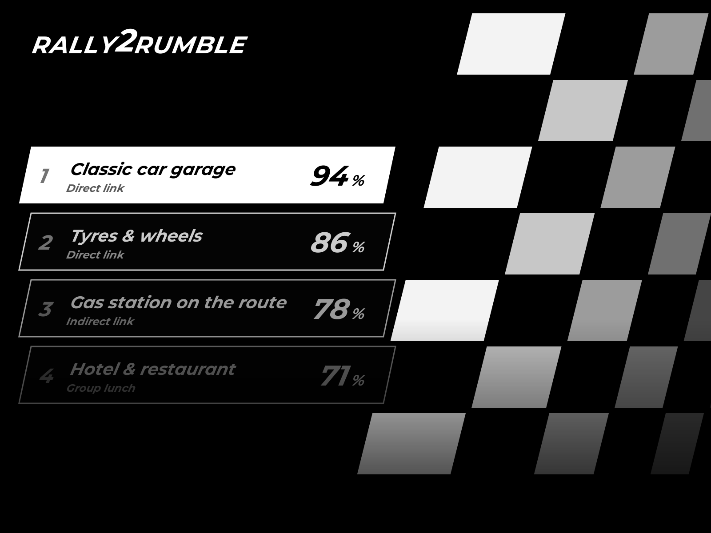
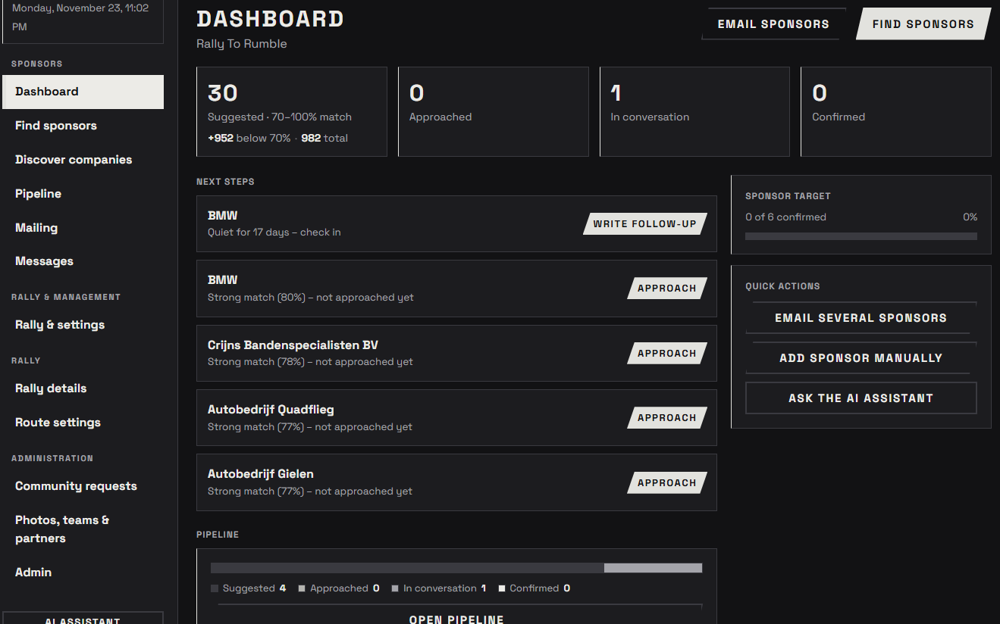
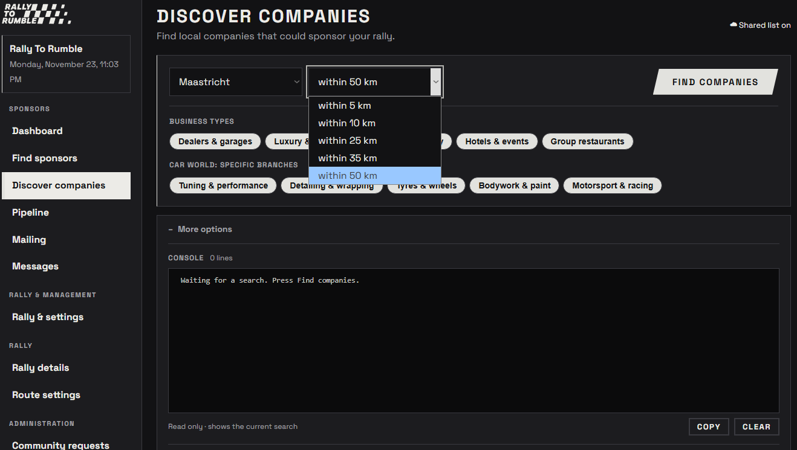
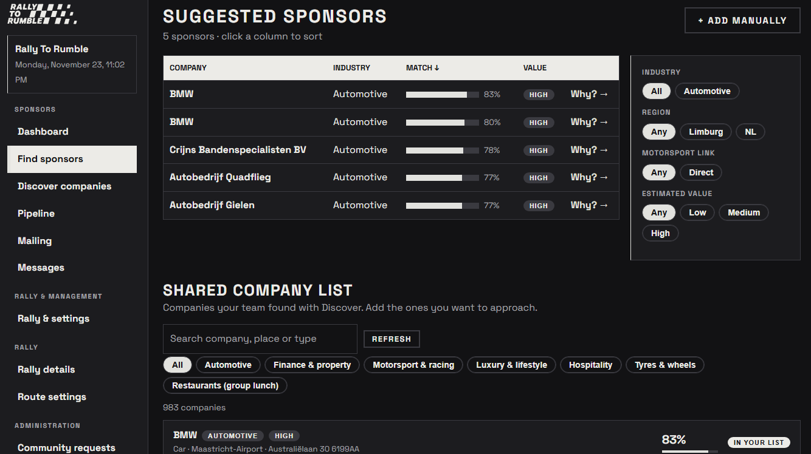
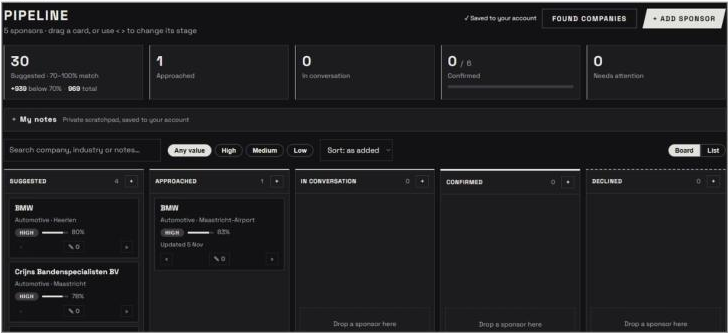
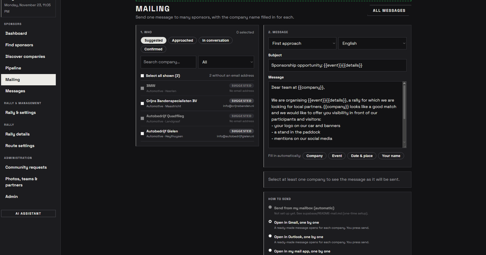
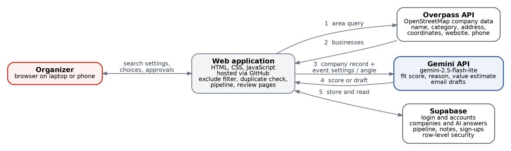
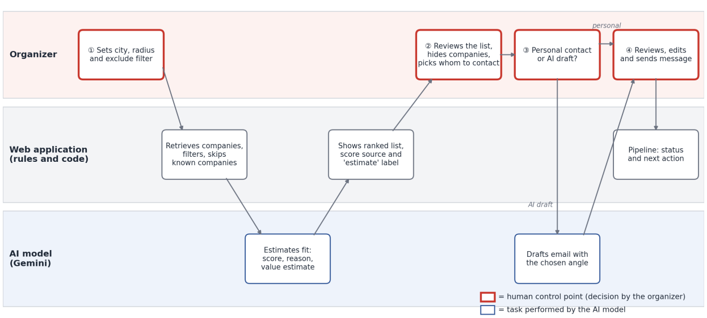

Rally to Rumble is a regional car rally in Maastricht with 50 cars and more than 100 participants. The two owners look for sponsors themselves, without a sponsorship team. That means searching for companies one by one, judging fit on gut feeling, hunting for contact details and writing every message by hand.
Together with four classmates I designed, built and evaluated an AI assistant for this problem as part of the minor AI for Business and Society at Zuyd University of Applied Sciences. It finds real companies around the rally, ranks them on fit with an explanation, drafts outreach emails on request and tracks every sponsor in a pipeline. The organizer keeps every decision.
Small events live on local sponsors, but a fragmented pool of small businesses is hard to survey by hand. Fit matters too: a garage is an obvious match, but a gas station on the rally route is a good sponsor as well, and that link is not visible from a company name. The owners told us what they did not want: a very long list instead of a small relevant selection, a "black box" score without explanation, and messages sent without their approval.
The assistant works in three stages: identify (find and rank sponsors), approach (contact personally or with an AI-drafted email) and follow up (track each sponsor in a pipeline).
The key design choice is a clear split of tasks. Companies come from OpenStreetMap, not from a language model, so the AI cannot invent companies. The language model is only used where it adds value: estimating fit, explaining the score and drafting emails. It never searches, decides or sends anything.
The screenshots and the embedded website on this page show the prototype we built for the minor AI for Business and Society. The updated Rally to Rumble website is up and running at rallytorumble.com. If you are interested in Rally to Rumble and want to take part in the rally, you can create a real account there.
The live website was also created by me and the owners of rally to rumble. Accounts are approved by us. the website is originally in dutch but you can easily switch to english, german or french.







The prototype web application, built by me and my project team. The updated live version is at rallytorumble.com. The prototype has the sponsor assistant for organizers and a participant site with route, agenda, photos and sign-up in Dutch, German, English and French. Accounts are approved by an admin, so the sponsor tool itself needs a login. Open the prototype in a new tab ↗.
We evaluated technical quality, usability and usefulness separately. The first four moments were formative and shaped the design, the last two evaluated the final version with its intended users.
| Moment | Who | Outcome |
|---|---|---|
| Expert consultation | Technical AI expert, 10 written questions | Suitable case, keep a human in the loop, verify facts |
| Concept validation | Owner interview | Personal contact preferred, concept changed |
| Data quality check | Team, 20 random companies of about 240 | Companies are real, many gas stations |
| Open test session | 11 classmates and 2 owners | Missing password reset and info, free-tier limits |
| Participant questionnaire | 1 rally participant | Easy navigation and clear design, clarify costs and region |
| Owner evaluation | 1 owner, written feedback | Professional, a strong basis for finding sponsors |
Of the 20 requirements we set, only 2 are demonstrated with evidence (no message reaches a company without the organizer's approval). 9 are implemented but their measurable criterion was not tested, 4 are partly implemented and 5 are not implemented or not tested.
What we have shown is a working tool that finds, ranks and explains local sponsor candidates and drafts emails, rated useful by the intended user. What we have not shown is time saved, ranking accuracy or more sponsors. The evaluation involved one end user per group, and one team member is personally involved in the rally, so the owners may have been more positive than an independent organizer. The report names this openly and recommends a follow-up with 3 to 5 organizers of other events, measuring time per task and precision at 10.
A useful AI solution is more than choosing a model: the data, the workflow, the interface and the role of the user matter just as much. Splitting tasks (a map database for facts, a language model only for interpreting and writing) removed the biggest risk of hallucinated companies. Exploring options and then choosing kept the project realistic: the chatbot was dropped and the owner's wish for personal contact changed the whole concept.
I also learned to separate what is implemented from what is actually proven, and to say so openly.